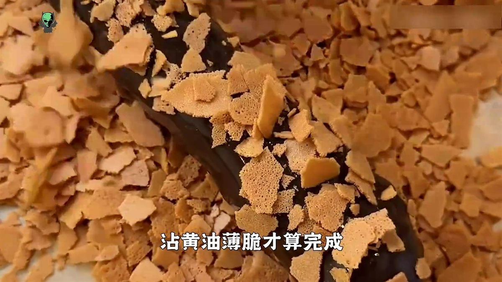
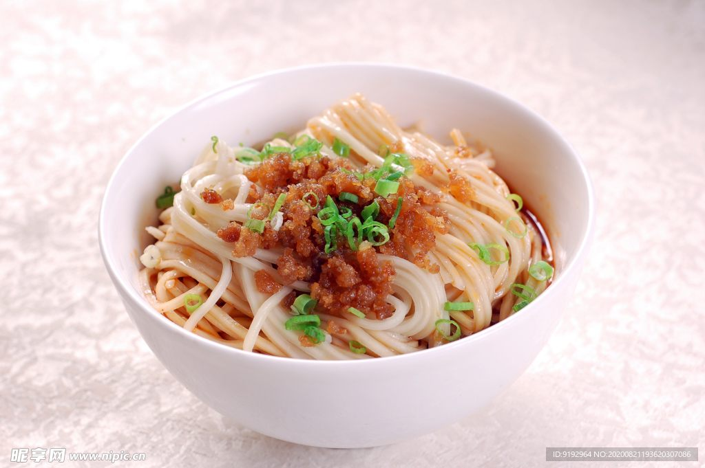
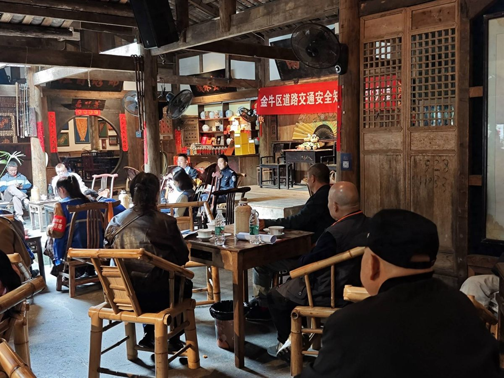

Tangyou Guozi · 街头小吃
外酥里糯，甜而不腻 —— 成都街头最温暖的甜蜜记忆
铁锅热油，红糖翻滚，糯米团子在锅中转出金黄。串在竹签上的那一刻，是无数成都人共有的童年味道。
Introduction
糖油果子是成都街头最经典的甜味小吃之一。糯米粉团裹上红糖与芝麻，在滚烫的油锅中翻炸至外皮金黄欲炸，捞出后趁热串在竹签上。外酥里糯、甜香扑鼻，咬下去芝麻香与红糖甜一同迸发，是成都人从小吃到大的「甜蜜记忆」。
铁锅现炸现卖，一锅油、一勺糖，翻滚中成就金黄。
外壳焦脆、内里软糯，一脆一糯的层次感是精髓。
几元钱一串，是几代成都人共同的味觉乡愁。
Deep Dive

糖油果子的主料极为朴素：糯米粉加热水揉成团，搓成小圆球；锅中下红糖与菜籽油，熬至糖色泛起琥珀红，再下糯米球翻炸。糖、油、糯米三样寻常之物，就这样被点化成一道街头名点。

糖油果子成败全在火候：油温太高糖焦发苦，油温太低果子吸油发腻。老师傅靠「看泡、听声、观色」掌握节奏，翻炸中果子渐渐鼓起、变金黄，外壳酥脆而内里还保留软糯。
糖油果子讲究「现炸现吃」：刚出锅时外壳最脆、糖香最浓，凉了外皮会回软发韧。用竹签串着边走边吃，是成都人逛街最经典的姿态。

糖油果子是典型的「街边美食」，很多老摊只卖这一样，一口油锅、一盆糯米球，生意却能火几十年。宽窄巷子、锦里、建设路等小吃街都能找到，但本地人更爱去居民区附近的固定小摊。
FAQ
Key Points
刚出锅的几分钟是黄金口感，凉了就变韧。
红糖熬出的琥珀色与焦香，是白糖替代不了的。
内里糖浆极烫，先咬小口防烫嘴。
5-10元一串，是成都最亲民的甜蜜。